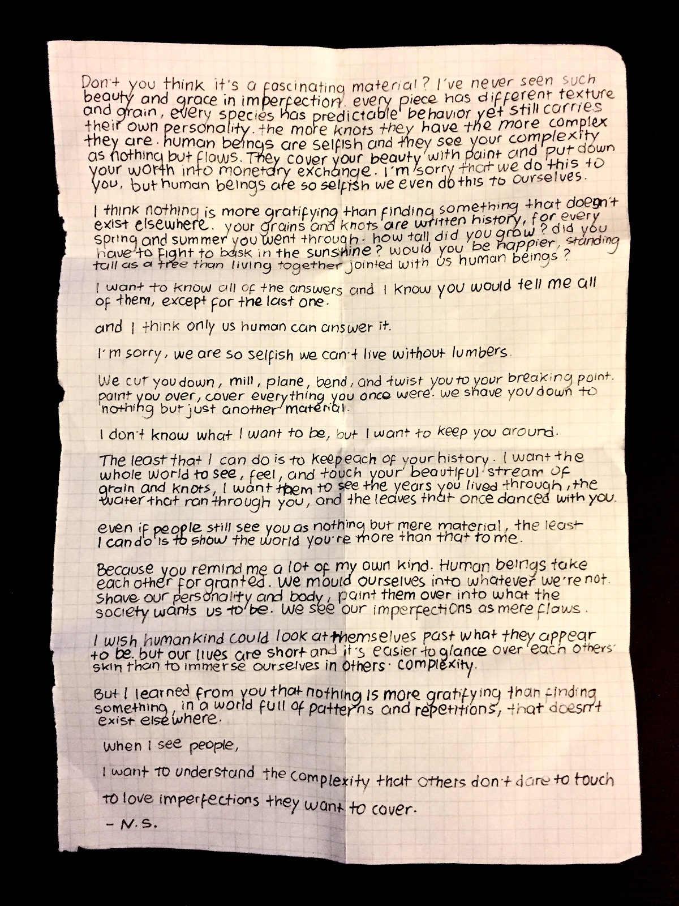

A love letter I wrote to wood, unedited version. I was obsessed with wood as material, I still am, but I wrote this letter when I was still trying to understand my material better. I thought writing how I feel about my material would help me gain a new perspective.
Although some of my thoughts and beliefs have changed since I wrote this letter, I still find it charming. I can spot many grammar, even spelling errors, and some sentiments that's awkward—cringe, they call it these days. I had fun writing it. all I had was passion, and I let it run. The talent show committee at my undergraduate let me read it out loud on stage. I was pleasantly surprised at how many people appreciated my letter.
Transcription:
Don’t you think it’s a fascinating material? I’ve never seen such beauty and grace in imperfection. every piece has different texture and grain, every species has predictable behavior yet still carries their own personality. the more knots they have the more complex they are. human beings are selfish and they see your complexity as nothing but flaws. They cover your beauty with paint and put down your worth into monetary exchange. I’m sorry that we do this to you, but human beings are so selfish we even do this to ourselves.
I think nothing is more gratifying than finding something that doesn’t exist elsewhere. your grains and knots are written history, for every spring and summer you went through. how tall did you grow? did you have to fight to bask in the sunshine? would you be happier, standing tall as a tree than living together jointed with us human beings?
I want to know all of the answers and I know you would tell me all of them, except for the last one.
and I think only us human can answer it.
I’m sorry, we are so selfish we can’t live without lumbers.
We cut you down, mill, plane, bend, and twist you to your breaking point. paint you over, cover everything you once were. we shave you down to nothing but just another material.
I don’t know what I want to be, but I want to keep you around.
The least that I can do is to keep each of your history. I want the whole world to see, feel, and touch your beautiful stream of grain and knots, I want them to see the years you lived through, the water that ran through you, and the leaves that once danced with you.
even if people still see you as nothing but mere material, the least I can do is to show the world you’re more than that to me.
Because you remind me a lot of my own kind. Human beings take each other for granted. We mould ourselves into whatever we’re not. shave our personality and body, paint them over into what the society wants us to be. we see our imperfections as mere flaws.
I wish humankind could look at themselves past what they appear to be. but our lives are short and it’s easier to glance over each others’ skin than to immerse ourselves in others’ complexity.
But I learned from you that nothing is more gratifying than finding something, in a world full of patterns and repetitions, that doesn’t exist elsewhere.
When I see people,
I want to understand the complexity that others don’t dare to touch.
to love imperfections they want to cover.
- N. S.